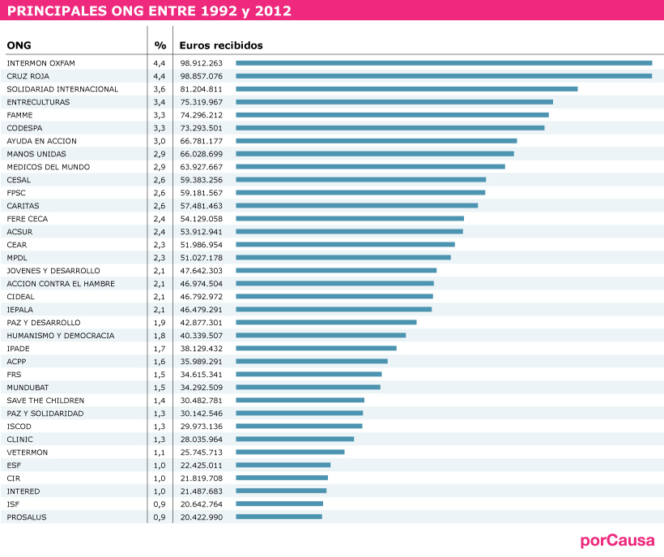
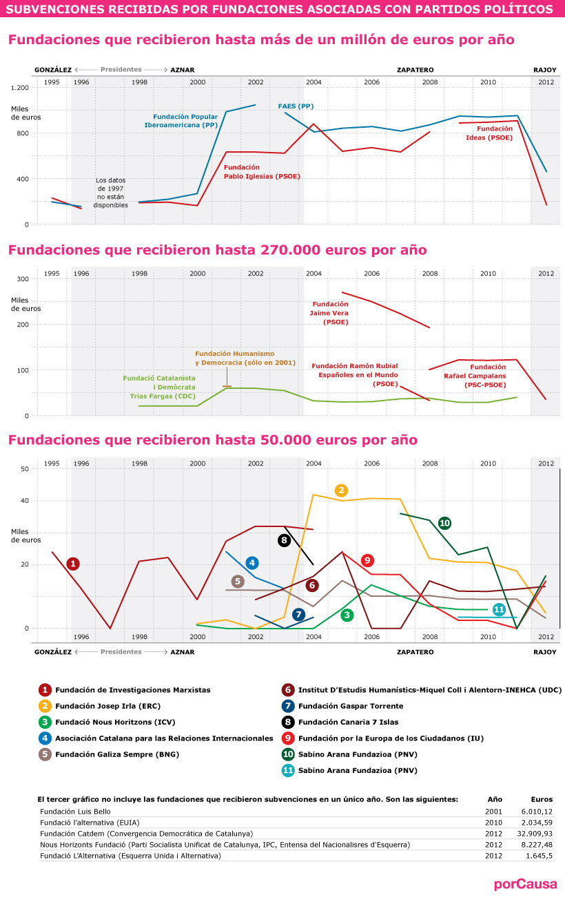

Periodismo e investigación contra la pobreza
@porCausaorg • 12 / 11 / 2013
La Fundación porCausa nace con el propósito de ofrecer a la sociedad información de calidad que ayude a promover el debate público sobre asuntos relacionados con la pobreza y la desigualdad. Pocos son tan importantes como el análisis de los recursos destinados a la lucha contra la pobreza, dentro y fuera de nuestro país.
Para abrir nuestra primera línea de investigación, hemos recopilado los datos completos sobre las subvenciones que el gobierno central destina a las organizaciones privadas y públicas que operan en el campo de la cooperación internacional para el desarrollo. Los datos abarcan subvenciones concedidas entre 1992 y 2012, cuando España se convirtió en uno de los principales donantes globales (en 2009 fue el sexto donante en términos absolutos, según los datos de la OCDE).
Se trata de un ámbito complejo en el que la información disponible no siempre está completa y en un formato accesible para su análisis. El primer paso del proyecto es ofrecer a los lectores toda la información que hemos podido conseguir, tras haber verificado los datos, y en un formato que facilite su consulta y exploración. La información recopilada puede ser utilizada, reutilizada y redistribuida libremente. En las siguientes fases del proyecto, la colaboración con medios de España y Latinoamérica nos permitirá explorar en profundidad todos estos datos desde múltiples perspectivas.
Cuando este asunto ha sido tratado por los medios de comunicación en el pasado, la tentación ha sido centrarse a referencias anecdóticas a proyectos y programas de dudosa justificación. Nuestro propósito es huir de estas simplificaciones para ofrecer a la opinión pública un debate informado y de calidad. Las ONG constituyen una herramienta imprescindible en la estrategia contra la pobreza, y por eso precisamente merecen estar sujetas al escrutinio público.
El proyecto que hoy lanzamos se irá desarrollando en los próximos meses con una serie de análisis que abordarán las siguientes cuestiones:
- La relevancia de las ayudas a las ONG en el conjunto de la cooperación española: A lo largo de las dos últimas décadas las organizaciones de la sociedad civil han recibido importantes recursos de la Ayuda Oficial al Desarrollo (AOD). Aunque el peso de esta partida con respecto al conjunto de la cooperación ha estado por debajo de otros países donantes de ayuda como Irlanda, Países Bajos, Estados Unidos y Noruega, la caída del volumen total de AOD proveniente del gobierno central ha incrementado la importancia relativa de estas organizaciones con respecto a los programas de carácter multilateral (donaciones a Naciones Unidas, por ejemplo) y bilateral (programas gestionados directamente por el gobierno). De acuerdo con las previsiones del Secretario de Estado para la Cooperación, las ONG supondrán un 31% del presupuesto operativo de la Agencia Española de Cooperación Internacional para el Desarrollo en 2014.

- El impacto de la cooperación no gubernamental: Estas ayudas han permitido extender la acción de la cooperación española y lograr resultados concretos en muchos países pobres. Como demuestra la reciente tragedia de Filipinas, la cooperación no gubernamental salva vidas, garantiza la seguridad y el acceso a servicios esenciales de decenas de miles de personas, ofrece un apoyo básico para la sociedad civil organizada de los países más pobres y sensibiliza a los ciudadanos españoles con respecto a lo que ocurre fuera de nuestras fronteras. Se trata de un trabajo que la sociedad española no conoce en toda su extensión.
- Los riesgos del actual modelo de ayudas: A pesar de los numerosos beneficios de las ayudas a las ONG, existen problemas. Los diferentes gobiernos españoles han perpetuado un modelo atomizado de subvenciones que distribuye pocos recursos anuales entre un número cada vez más amplio de organizaciones. De acuerdo con un primer análisis de los datos que publicamos, 35 organizaciones recibieron más de un 1% de los fondos totales concedidos por la convocatoria de Proyectos y Convenios entre 1992 y 2002(sobre un total de 479 organizaciones que recibieron ayudas a través de esta convocatoria). En el caso de la convocatoria Abierta y Permanente, la lista de las organizaciones que más recursos han recibido se amplía a 48 (la mayor parte de las cuáles no están en la anterior).
Un número amplio de ONG han mantenido una dependencia llamativa del sector público. De acuerdo con los primeros análisis realizados por porCausa, de las 15 organizaciones que más recursos recibieron desde 1992 de la convocatoria de Proyectos y Convenios, al menos seis recibieron en 2010 más recursos públicos que privados. En cuatro de estos casos la dependencia supera el 80% de los fondos totales gestionados por la organización.
Algunas de estas organizaciones han recibido ayudas debido, exclusivamente, a su vinculación con los partidos políticos: cerca de 25 millones de euros entre 1995 y 2012, la gran mayoría destinados a fundaciones de estudio vinculadas a los partidos en el gobierno (FAES e Ideas, por ejemplo) y con una trayectoria cuestionable en el campo de la cooperación internacional.

- Las datos de la cooperación “descentralizada”: Nuestro análisis no incluye la cooperación realizada a través de comunidades autónomas, diputaciones y ayuntamientos, que en algunos años ha llegado a superar los 600 millones de euros y que, en buena medida, ha sido canalizada a través de ONG. porCausa busca la colaboración de periodistas e investigadores que permitan completar la base de datos con esta información esencial. Escríbenos si estás interesado en participar.
El debate acerca de los recursos públicos destinados a las ONG ha cobrado más relevancia durante los últimos años, en los que los gobiernos de los presidentes Zapatero y Rajoy recortaron los recursos de la ayuda un 62% con respecto a 2008 sin que se produjese una contestación social significativa. Entonces se puso de manifiesto la distancia que existe entre los ciudadanos españoles y las ONG, que han jugado un papel importante en la realización de programas contra la pobreza descuidando sus vínculos con la sociedad a la que representaban.
En este momento se están discutiendo unos presupuestos en los que se consolida la caída de la ayuda con respecto a años anteriores y el Gobierno podría estar considerando una reforma del sistema de ayudas a las ONG que, con la excepción de la introducción de los convenios con grandes entidades, se ha mantenido casi inalterado desde su creación. La reforma es una oportunidad para hacerse algunas preguntas relevantes con respecto a la eficacia del sistema:
¿Cuánto ha recibido cada organización y para qué? ¿Cuál ha sido la evolución de los recursos públicos con respecto a la financiación privada y el número de socios de cada organización?
¿Qué criterios emplearon los diferentes gobiernos a la hora de repartir las ayudas? ¿Qué países se han beneficiado y en qué sectores?
¿Se favoreció a las ONG vinculadas o ideológicamente próximas a los partidos políticos, sindicatos u organizaciones empresariales?
¿Cuáles son las condiciones exigibles a una ONG que recibe dinero público de la cooperación? ¿Cuáles a las administraciones que entregan los recursos?
¿Cuál es el valor añadido de las ayudas a ONG con respecto a otras herramientas de la cooperación?
¿Se pueden introducir reformas que garanticen la sostenibilidad del sector pero mejoren la eficacia de las ayudas y la independencia de las organizaciones?
¿Qué hacen otros países donantes en situaciones similares?
Enlace permanente